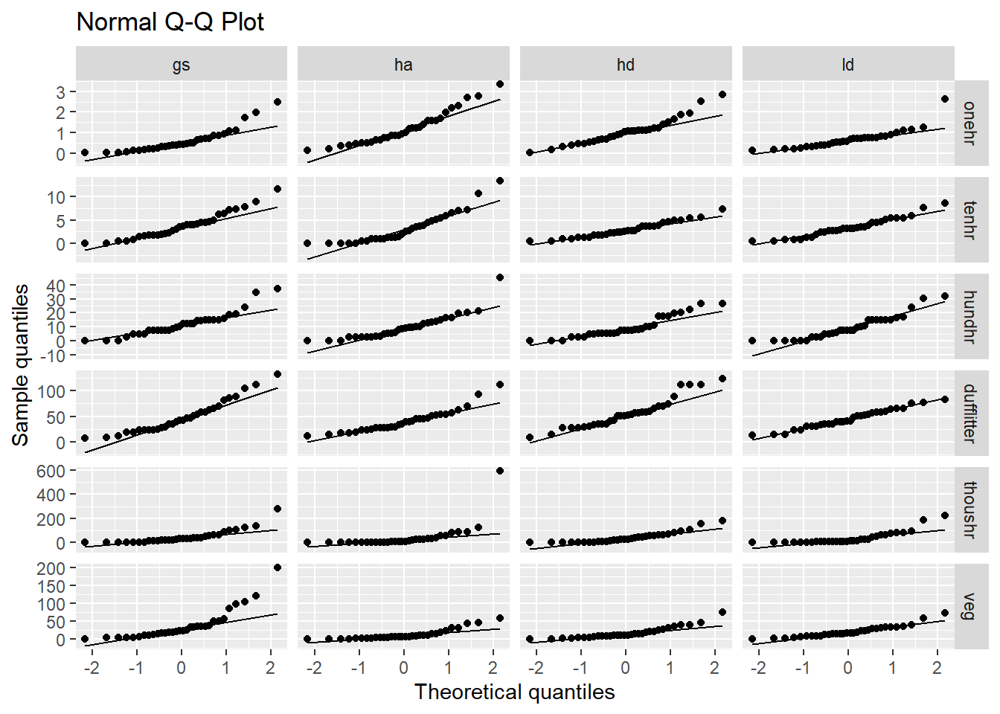
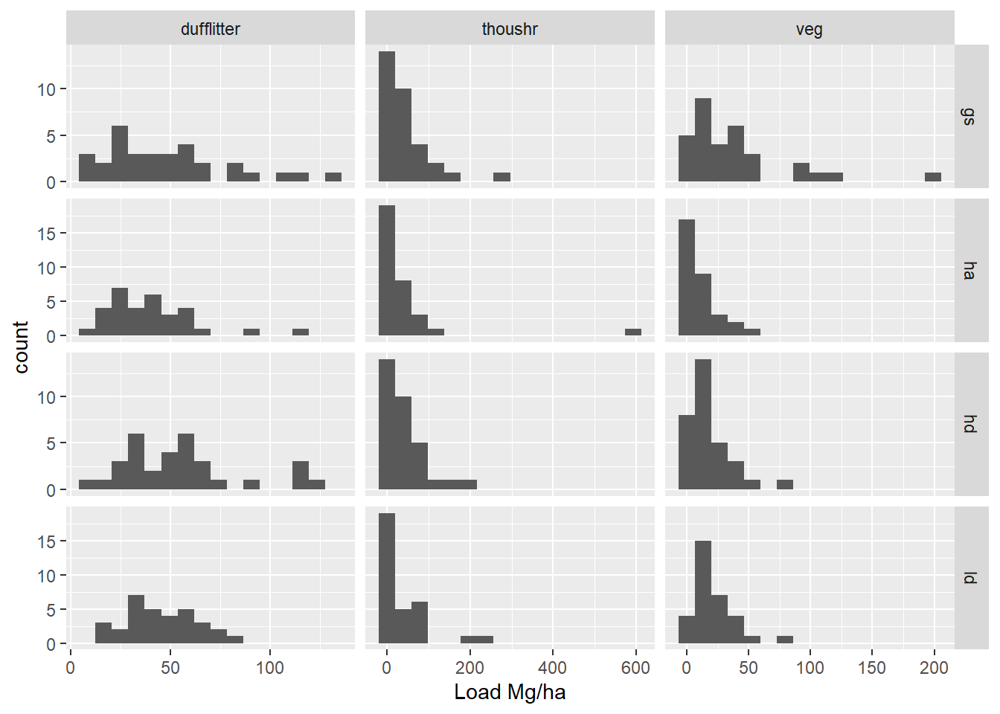
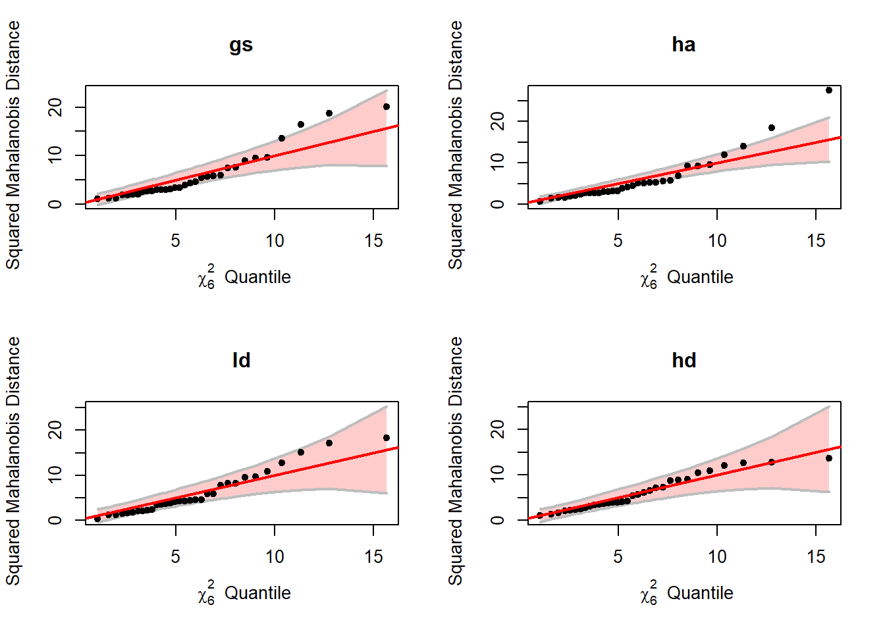

cleavland_plot <- function(data, title, load_var = load) {
data |>
group_by(site, treatment) |>
mutate(replicate_mean_load = mean({{load_var}}, na.rm = TRUE)) |>
ggplot(
aes(
{{load_var}},
fct_reorder(
interaction(site, treatment, sep = " "),
{{load_var}},
.na_rm = TRUE
),
color = treatment
)
) +
geom_jitter(width = 0, height = 0.2) +
labs(x = expression(Load~(Mg%.%ha^-1)), y = "Data order", title = title)
}4 Fuel data exploration
Our main questions regarding fuel loading are:
- Are there differences in fuel loading between treatments?
- If so, what fuel loading components differ, and in which treatments?
- What is the magnitude of the difference by treatment?
We have a range of response variables that include loading in several different classes of surface fuels. Some of these may be correlated with each other, which may have an effect on our interpretation of differences between treatments. For instance, if duff-litter load is negatively correlated with vegetation, even if we don’t see differences between treatment in either of these variables separately, it might be found that for any given level of vegetation loading, one treatment, or another may have consistently higher levels of duff-litter. Capturing differences between treatments in terms of interactions like these requires different tools than assessing any one variable on its own.
In order to assess potential outliers, co-linearity, interactions, and other problems with statistical tests, we’ll first conduct some data exploration as outlined by Zuur, Ieno, and Elphick (2010).
For reference, here is a list of the fuel loading (response) variables of interest.
- duff/litter load
- woody vegetation
- herbaceous vegetation
- one hr fuels
- ten hr fuels
- hundred hr fuels
- fine woody debris (one, ten, and hundred hr fuels)
- coarse woody debris
It’s important to note that variables 1-3 were measured twice per transect and the rest were measured once per transect.
4.1 Outliers


Warning: Removed 1 rows containing missing values (`geom_point()`).
Removed 1 rows containing missing values (`geom_point()`).

4.2 Normality
For further testing, I will summarize the data somewhat, by combining vegetation loading (woody and herb), and coarse woody loading (sound and rotten) into just two loading metrics. Now we have the following response variables:
- dufflitter
- onehr
- tenhr
- hundhr
- thoushr
- veg
Code
load2 <- function(shape = "wide", ...) {
load_vars <- c("onehr", "tenhr", "hundhr", "dufflitter", "thoushr", "veg")
tl <- pivot_wider(total_load, names_from = class, values_from = load) |>
mutate(
thoushr = rowSums(pick(c(thoushr_s, thoushr_r)), na.rm = TRUE),
veg = rowSums(pick(c(woody, herb)), na.rm = TRUE),
.keep = "unused"
)
if (!missing(...)) tl <- select(tl, ...)
if (shape == "long") {
tl <- pivot_longer(tl,
-any_of(c("site", "treatment", "corner", "azi")),
names_to = "class",
values_to = "load"
)
load_vars <- load_vars[load_vars %in% tl$class]
tl <- mutate(tl, class = factor(class, levels = load_vars))
}
tl
} When using manova to test for difference between groups with multiple response variables, it is important that the response variables are multivariate normally distributed. Unfortunately, it would appear that we have a probelem with normality. The raw data for each loading variable is clearly not normally distributed Figure 4.6.
load_vars <- c("onehr", "tenhr", "hundhr", "dufflitter", "thoushr", "veg")
load2("long", treatment, all_of(load_vars)) |>
ggplot(aes(sample = load)) +
stat_qq() +
stat_qq_line() +
facet_wrap(~class, scales = "free")
bins <- 16
hist_dat <- load2("long", treatment, all_of(load_vars)) |>
drop_na() |>
# Facet grid each column (class) has same scale, find limits to calculate bin
# width, limits are either implied by the constructed normal curce, or the raw
# data
group_by(class) |>
mutate(
xmin = min(c(mean(load) - 3 * sd(load), load)),
xmax = max(c(mean(load) + 3 * sd(load), load))
) |>
group_by(treatment, class) |>
nest(data = load) |>
# generate data for a normal curve with mean and sd from observed data to
# cover 3 sd.
mutate(
norm_x = map(data, function (d) {
seq(
from = mean(d$load) - 3 * sd(d$load),
to = mean(d$load) + 3 * sd(d$load),
length.out = 100
)
}),
# scale curve to expected binwidth based on plot layout (same x scale across
# all fuel classes) multiplied by the number of observations. The histogram
# and normal curve should represent the same total area.
norm_y = map(data, function (d) {
dens <- dnorm(unlist(norm_x), mean = mean(d$load), sd = sd(d$load))
dens * ((xmax - xmin) / bins) * nrow(d)
})
)Code
# Break plot into two panels for higher resolution.
ggplot(filter(hist_dat, class %in% load_vars[1:3] )) +
geom_histogram(data = \(x) unnest(x, data), aes(x = load), bins = bins) +
geom_line(data = \(x) unnest(x, c(norm_x, norm_y)), aes(norm_x, norm_y)) +
facet_grid(treatment ~ class, scales = "free") +
labs(y = "count", x = "Load Mg/ha")
ggplot(filter(hist_dat, class %in% load_vars[4:6] )) +
geom_histogram(data = \(x) unnest(x, data), aes(x = load), bins = bins) +
geom_line(data = \(x) unnest(x, c(norm_x, norm_y)), aes(norm_x, norm_y)) +
facet_grid(treatment ~ class, scales = "free") +
labs(y = "count", x = "Load Mg/ha")
For MANOVA we are concered with the within group multivariate normality, the assumption does not appear to be met here either (Figure 4.8). The code output below indicates the rows with the greatest deviation from normal.
tl <- load2("wide", treatment, all_of(load_vars))
load_mod <- lm(as.matrix(tl[-1]) ~ treatment, data = tl)
m_dist <- heplots::cqplot(load_mod)
load2("wide", everything())[order(m_dist, decreasing = TRUE)[1:10], ]# A tibble: 10 × 10
site treatment corner azi dufflitter onehr tenhr hundhr thoushr veg
<chr> <chr> <chr> <dbl> <dbl> <dbl> <dbl> <dbl> <dbl> <dbl>
1 waldos ha nw 90 23.2 1.27 10.7 21.2 593. 16.2
2 waldos gs ne 270 131. 1.72 6.46 16.1 36.3 199.
3 whiskey ha n 225 27.1 2.76 13.3 45.2 32.1 8.5
4 waldos gs se 270 54.1 0.504 11.6 34.8 280. 0.9
5 whiskey gs n 225 27.1 0.124 2.09 8.56 0 121.
6 waldos ha se 270 112. 2.32 0.930 2.54 0 46.1
7 waldos ha se 0 15.5 3.34 6.53 13.7 17.7 6.31
8 waldos gs se 0 38.7 1.08 7.31 37.3 17.6 4.23
9 waldon gs e 225 112. 0.711 8.98 14.7 89.6 34.6
10 whiskey ld s 315 77.3 0.390 5.38 31.9 59.8 74.2 treatments = c("gs", "ha", "ld", "hd")
par(mfrow = c(2, 2))
invisible(lapply(treatments,
\(x) heplots::cqplot(filter(tl, treatment == x)[-1], main = x)
))
A number of different tests of multivariate normaliy also confirm the lack of evidence for meeting this assumption (Table 4.1).
all_mvn_tests <- function(data) {
c("mardia", "hz", "royston", "dh", "energy") |>
map(\(x) MVN::mvn(data = data, subset = "treatment", mvnTest = x)) |>
map(\(x) x$multivariateNormality) |>
map(\(x) bind_rows(x, .id = "treatment")) |>
map_dfr(\(x)
filter(x, Test != "MVN") |>
mutate( across(where(is.factor), \(f) as.numeric(as.character(f)))) |>
select(1:2, statistic = 3, `p value`, Result = last_col())
)
}
all_mvn_tests(load2("wide", treatment, all_of(load_vars))) |>
knitr::kable(digits = 4)| treatment | Test | statistic | p value | Result |
|---|---|---|---|---|
| gs | Mardia Skewness | 156.2386 | 0.0000 | NO |
| gs | Mardia Kurtosis | 4.1306 | 0.0000 | NO |
| ha | Mardia Skewness | 198.9055 | 0.0000 | NO |
| ha | Mardia Kurtosis | 5.8903 | 0.0000 | NO |
| hd | Mardia Skewness | 85.1671 | 0.0072 | NO |
| hd | Mardia Kurtosis | 0.7268 | 0.4673 | YES |
| ld | Mardia Skewness | 122.0012 | 0.0000 | NO |
| ld | Mardia Kurtosis | 3.2534 | 0.0011 | NO |
| gs | Henze-Zirkler | 1.1979 | 0.0000 | NO |
| ha | Henze-Zirkler | 1.2792 | 0.0000 | NO |
| hd | Henze-Zirkler | 1.0978 | 0.0001 | NO |
| ld | Henze-Zirkler | 1.1036 | 0.0001 | NO |
| gs | Royston | 79.7755 | 0.0000 | NO |
| ha | Royston | 105.5921 | 0.0000 | NO |
| hd | Royston | 51.6106 | 0.0000 | NO |
| ld | Royston | 65.9480 | 0.0000 | NO |
| gs | Doornik-Hansen | 45.8165 | 0.0000 | NO |
| ha | Doornik-Hansen | 57.3566 | 0.0000 | NO |
| hd | Doornik-Hansen | 65.4678 | 0.0000 | NO |
| ld | Doornik-Hansen | 38.4513 | 0.0001 | NO |
| gs | E-statistic | 1.9038 | 0.0000 | NO |
| ha | E-statistic | 2.1409 | 0.0000 | NO |
| hd | E-statistic | 1.6312 | 0.0000 | NO |
| ld | E-statistic | 1.7881 | 0.0000 | NO |
4.3 Homogeneity of variance
Zuur, Alain F., Elena N. Ieno, and Chris S. Elphick. 2010. “A Protocol for Data Exploration to Avoid Common Statistical Problems.” Methods in Ecology and Evolution 1 (1): 3–14. https://doi.org/10.1111/j.2041-210X.2009.00001.x.